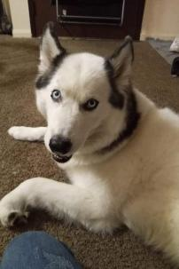

|  |
Samuel S. SantosNascido em Itapetinga, Bahia, Brasil, no ano de 2005 no dia 6 de Maio. Eu sou um mero estudante no curso da Angela Yu. Pretendo me tornar um dev FullStack. Começando de novo, espero que continue focado desta vez. |
| Data | O que fiz |
|---|---|
| 2018 | Tive interesse em começar a programar |
| 2019-2021 | Não consumi nada sobre programação durante este tempo |
| 2022 | Comecei de novo em programação, mas agora com vontade de trabalhar com isso |
| Piano/Teclado | ⭐⭐ |
| Web Development | ⭐ |
| Fotografia | ⭐⭐ |
| Design | ⭐⭐ |